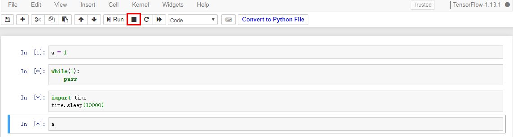
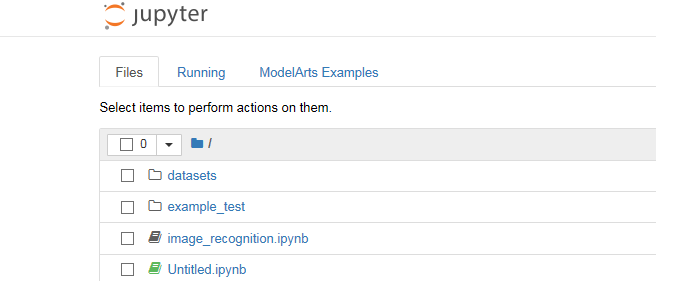

If a notebook instance fails to execute code, you can locate and rectify the fault based on the following scenarios:
- If the execution of a cell is suspended or lasts for a long time (for example, the execution of the second and third cells in Figure 1 is suspended or lasts for a long time, causing execution failure of the fourth cell) but the notebook page still responds and other cells can be selected, click interrupt the kernel highlighted in a red box in the following figure to stop the execution of all cells. The notebook instance retains all variable spaces.
Figure 1 Stopping all cells
- If the notebook page does not respond, close the notebook page and the ModelArts management console. Then, open the ModelArts management console and access the notebook instance again. The notebook instance retains all the variable spaces that exist when the notebook instance is unavailable.
Figure 2 Accessing the notebook instance again

- If the notebook instance still cannot be used, access the Notebook page on the ModelArts management console and stop the notebook instance. After the notebook instance is stopped, click Start to restart the notebook instance and open it. In this case, the notebook instance retains all the variable spaces that exist when the notebook instance is unavailable.